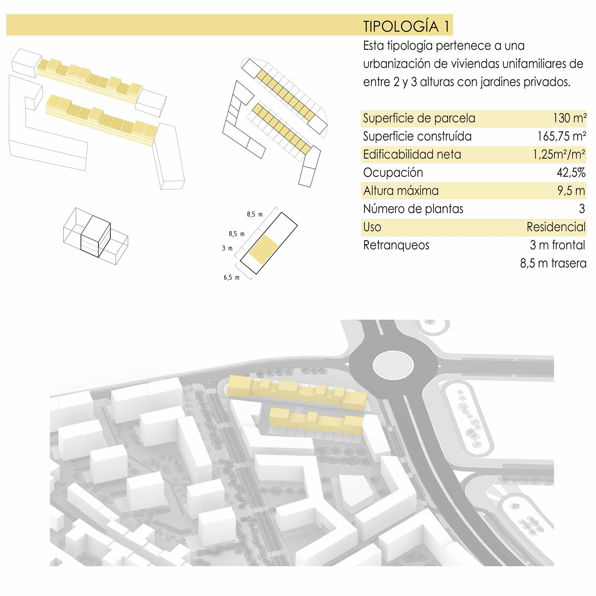
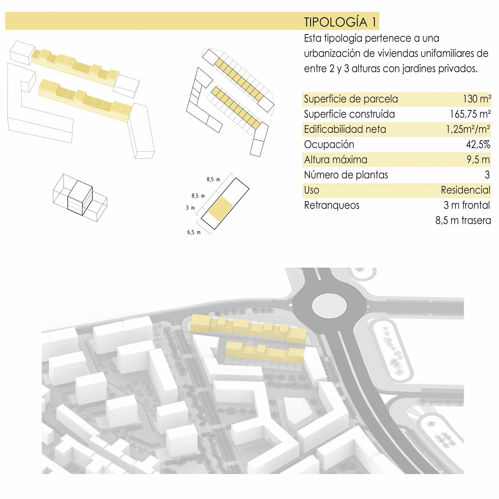

Color
 

Información del proyecto
- Categoría: Proyecto de regeneración urbana
- Lugar: Villa de Vallecas
- Autor: Grupo CCGI
- Tutor: Manuel Aymerich, UAH
Se trata de un proyecto de hibridación urbana y de regeneración de uno de los lugares que están olvidados en Madrid, entre dos zonas distintas, en este caso es en el Distrito de Villa de Vallecas, en el encuentro con su Ensanche. Se trataba de un solar vacío que separa la zona periférica del pueblo, que tenía características de «bloque lineal», con edificios de hasta 5 plantas, una parcelación bastante pequeña aprox, 200 m2, y sus espacios públicos reducidos a aceras de 1-2 m y calzada con 1 o 2 sentidos. Frente al nuevo Ensanche de Vallecas, este mezclaba las viviendas unifamiliares adosadas, con las grandes manzanas de edificios de hasta 9 plantas, las parcelas se trataban de manzanas enteras de aprox. 4500 m2, en cambio con las parcelas de las viviendas unifamiliares que se trataban de aprox. 375 m2.